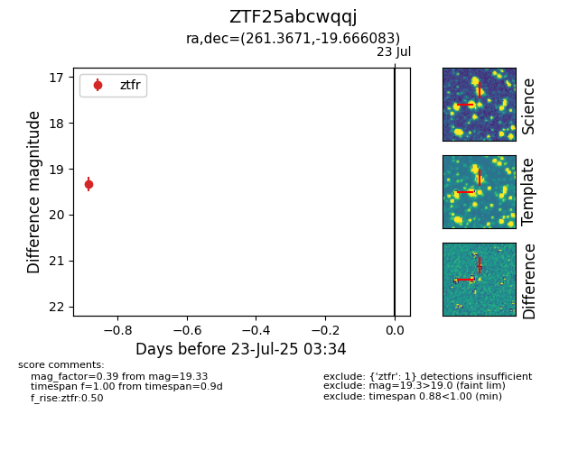

Target ZTF25abcwqqj at 2025-07-23 12:37, see:
FINK: fink-portal.org/ZTF25abcwqqj
Lasair: lasair-ztf.lsst.ac.uk/objects/ZTF25abcwqqj
ALeRCE: alerce.online/object/ZTF25abcwqqj
alt names
ZTF25abcwqqj (ztf,fink)
coordinates:
equatorial (ra, dec) = (261.3671,-19.66608)
galactic (l, b) = (5.3951,+8.83541)
photometry
last ztfr=19.33
1 ztfr detections
